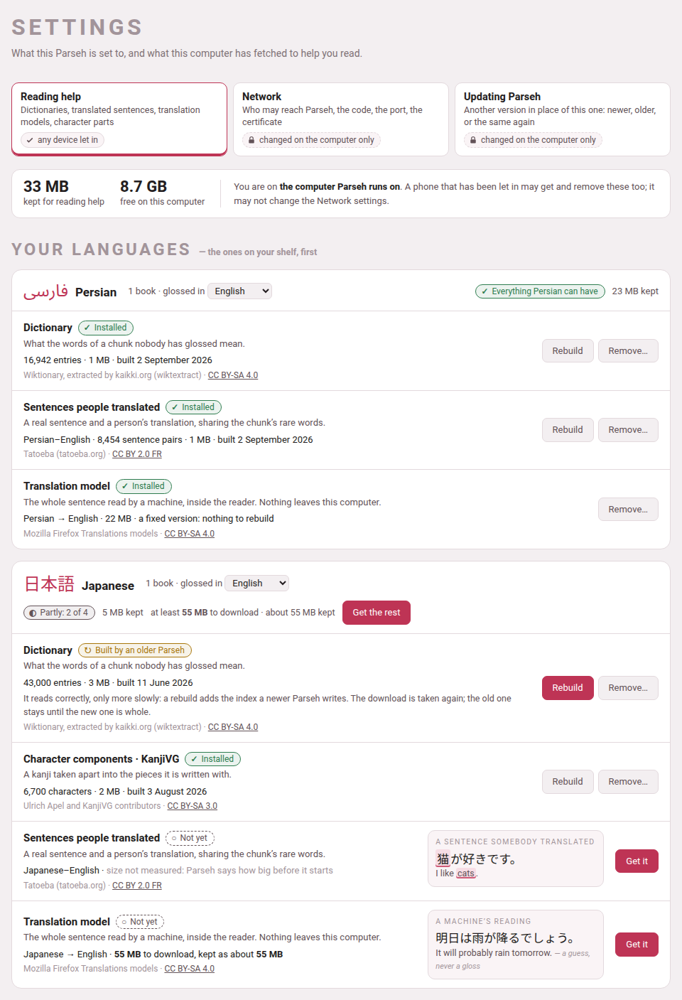
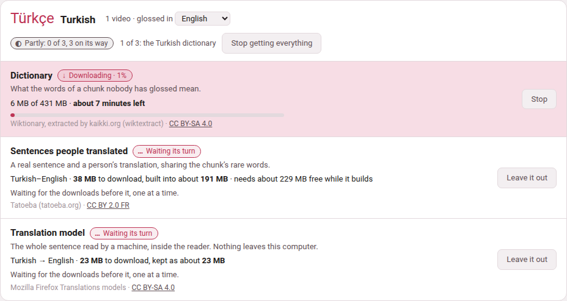

The reading-help page
Between pasting a text in and finishing its glosses lie weeks, and during those weeks most chunks of a book or a video have nothing under them. The page Reading help, in Settings, sets up everything Parseh can offer in the meantime. It is the same page for books and for videos, and it is laid out by language: a card for each language on your shelf, saying what it has and what it could have.

1. Getting there#
| From | What you press |
|---|---|
| The hub (the Browser layout) | the door 🔍 Reading what nobody has glossed. Its tags say what you have: no dictionary yet, or 1 dictionary, 3 dictionaries… followed by the code of every language that has one. |
| Settings | the door Reading help, beside Network. |
| Any book reader or video player | reading help, in the header, just after the dictionary switch (which is only there once something is installed for that language). |
| A chunk nobody has glossed | when nothing at all is installed for its language, the cloud of a chunk without a vocabulary line (in a book’s hover mode) says nothing glossed here yet, and under it: “A dictionary can look these words up, a corpus can show a sentence somebody translated, and a model can read the line. Set any of them up — it takes a couple of minutes.” The link opens this page. The player says the same under nothing glossed yet, in the cloud of any phrase of the video’s language that nobody has glossed. |
| Decompose Kanji or Decompose Hanzi | the dialog’s Open dictionary & component setup, Manage component packs and fallback coverage and Open setup links, which open the page at the character components of Japanese (or of Chinese, when that is the one on your shelf) |
| The address bar | /settings/reading-help/ on the server |
On a Parseh started on this machine with its defaults, the whole address is https://localhost:7654/settings/reading-help/.
The old address still works. The page used to live at /lookup/, and every reader built before then carries that address in its reading help link, as does every copy a phone keeps. /lookup/ now opens this page — and /lookup/#character-components opens it at the character components — so nothing has to be rebuilt for those links to keep working.
On a phone the page opens with the phone’s own bar, as its sibling Network does. The Mobile layout’s hub has no door to it — the hub on a phone is for reading and studying — but the reading help link of a reader, and the Set any of them up of a cloud, open it wherever you are.
2. Who may use it#
Any device that has been let in may get, stop and remove anything on this page: a phone on the Wi-Fi as much as the computer. None of it changes who may reach Parseh, what Parseh exposes or what it runs — it puts other people’s data on this computer’s disk, or takes it off again — so none of it is kept for the computer alone. The band at the top of the page says which device you are on and what you may do. The Network settings are the other kind: each of them decides who may reach Parseh, and a phone sees them but may not change them (From a phone or another computer).
3. A card per language#
Your languages come first: every language you have a book or a video in, the one with the most first. Each card’s header has:
- the language
- , in its own script and in English, and how many books and videos you have in it;
- glossed in
- , a picker: the sentences somebody translated and the translation model are pairs of languages, and the card shows the pair your books and videos are glossed in (English for most). Pick another to see — and get — that pair instead;
- how much of it is here
- : Everything Persian can have, Partly: 2 of 4, or Nothing yet, and the space it keeps;
- Get everything for Turkish
- (or Get the rest), with what that costs said beside it — at least 491 MB to download · about 520 MB kept.
Other languages follow, one line each — what they have, and the sizes that are known — with Open to see the whole card.
Shared by every language is the last card: the translation engine every model runs in (it comes with the first model), the English synonyms, and CJKVI-IDS, the component pack both Japanese and Chinese fall back on.
Each language can have up to four things, and each is installed on its own:
| Row | What it gives you | What it costs, and where it is kept |
|---|---|---|
| Dictionary, one per language | every word of the chunk looked up: headword, how it is said, part of speech, senses, and how the word on the page was reached from it | a download of 30 MB for a small language to over a gigabyte for a large one; dict/<code>.db |
| Character components, Japanese (KanjiVG) and Chinese (Make Me a Hanzi) | a character taken apart, as a tree | KanjiVG about 24 MB, the others about 3 MB each; components/<pack>.db |
| Sentences people translated, one per pair of languages | a real sentence and a person’s translation of it, chosen because it shares the chunk’s rare words | from a few megabytes (Persian–English) to 180 MB (Italian–English); corpus/<code>-<gloss>.db |
| Translation model, one per pair, always to or from English | the whole sentence read by a machine, inside the reader, with the chunk’s share of it marked | 20 to 55 MB a pair, plus a 5 MB engine once; mt/<code>-<gloss>/ and mt/engine/ |
| English synonyms, one file for every language | a table that helps the model’s mark find its words | about a megabyte, from a 16 MB download; mt/synonyms.en.json |
The dictionary is the one to get first: it is what the panel is built around, the components use it for their meanings, the sentences of a language written without spaces (Japanese, Chinese) cannot be cut into words without it, and the model’s mark is worked out from what it says. Get everything fetches it first for that reason. But each stands on its own — a corpus without a dictionary, or a model alone, is enough for the reader to offer its dictionary switch.
Each has a page of its own in this guide: Dictionaries, Kanji and Hanzi components, Sentences somebody translated, A translation model in the page and Synonyms for the machine’s reading.
4. A row, and what it says#
Every row says what it is for in one line, what it holds or would cost, and whose work it is — the source and its licence, linked — on its last line. Its state is a pill with a sign and a word, never a colour alone:
| Pill | What it means |
|---|---|
| ✓ Installed | here, and read by every reader and player of the language. The row says what it holds — 16,942 entries · 21 MB · built 2 September 2026. |
| ↻ Built by an older Parseh | a dictionary built before its index was added: it reads correctly, only more slowly. Its Rebuild button is the one to press. |
| ↓ Downloading · 62% (then ↻ Building) | on its way: a bar, how much has come of how much, and the time left — 34 of 55 MB · about 40 seconds left. |
| … Waiting its turn | part of a Get everything, waiting for the downloads before it. |
| ○ Not yet | not here. Beside it, a small example of what it would add, drawn the way the reader draws it, in the card’s own language. |
| ! Stopped | a download that did not finish, with why, in words — the line dropped, the source had nothing, you pressed Stop. |
| – Not available or – No model | this cannot exist, and why: Mozilla trains its models to and from English, so Persian glossed in Italian has none; a language glossed in itself has no sentences to translate. |
Sizes before anything is fetched#
A row not yet installed says what it would cost before you press anything: 431 MB to download, built into about 306 MB · needs about 737 MB free while it builds. These are sizes measured when Parseh was made, and each says about, because the sources grow.
Where nobody has measured one, the row says so — size not measured: Parseh says how big before it starts — and Get it asks the source first, then says, in the row, how big the download is and how much room there is, and asks you: Get it or Not now.
Parseh never starts what the disk has no room for. When the space free is less than the download needs while it is fetched and built, the row says so instead of starting — There is not enough room on this computer: the Turkish dictionary needs about 737 MB free while it is fetched and built, and 412 MB are free.
The buttons#
| Button | What it does |
|---|---|
| Get it | Downloads it and builds it, on this machine, in the background. Pressing it twice does not fetch it twice. |
| Stop | Stops a download on its way. What had come is kept: Carry on fetches only the rest, where the source allows it. |
| Carry on / Try again | On a stopped row: gets it again, from where it stopped when it can. |
| Rebuild | Fetches it again and builds it afresh — Wiktionary’s edits of the past year, the sentences Tatoeba has gained since, the index a newer Parseh writes. The new file is built beside the old one and moved over it only when it is whole, so a rebuild that stops half-way leaves the old one working. A translation model has none: it is a fixed version and would come back identical. |
| Remove… | Asks first, in the row — Remove the Turkish dictionary? It frees 306 MB; getting it back is a 431 MB download. — then deletes the file (a model: its folder). It is refused while that same thing is being fetched. Nothing else changes: books, videos, glosses and cards never depended on it. |
| Get everything for Turkish / Get the rest | Says first what it will fetch and what that costs in all, then fetches each thing the language can have and does not, one after another. |
| Stop getting everything | Stops the one on its way and leaves the rest out. |
| Leave it out | On a row waiting its turn: takes it out of Get everything. |

While it runs#
A dictionary is minutes of work and the page does not have to stay open. The downloads run on the server — Get everything too, one at a time, so a phone may lock its screen — and you can go and read, and come back to find the row where it has got to. Every page of Parseh says so in the meantime: the Working… pill in its bottom corner reads, for example, Working: Getting the Persian dictionary, and the hub’s panel lists it with the others —
| Row | On the Working list |
|---|---|
| a dictionary | Getting the Persian dictionary |
| a component pack | Getting the KanjiVG component pack |
| sentences people translated | Getting the Persian–English parallel sentences |
| a model | Getting the Persian–English translation model |
| the synonym table | Getting the synonym table |
| Get everything | Getting everything for Turkish, and which of its steps it is on |
— each with how far it has got and, seen from any other page, a link back to this one. When it ends, a page that saw it running says Done: and the same words. A failure, or a download you stopped, is not said there: it is said in the row, in words.
5. What travels, and what does not#
- Only the download goes out.
- It comes from these places, and from nowhere else: kaikki.org for Wiktionary, Tatoeba’s export site (
downloads.tatoeba.org), GitHub for the three component sources, Mozilla’s model service (the one Firefox gets its own models from), the jsDelivr CDN for the engine’s pinned npm release, and Princeton (wordnetcode.princeton.edu) for WordNet. Nothing about what you read is ever sent anywhere: a lookup reads a file on this machine, and the translation model runs inside the page. Opening this page sends nothing either: the sizes it shows are Parseh’s own; the source is asked only when you press Get it on a row whose size nobody measured. - What runs is pinned.
- The engine is code that runs inside the reader, so its files are checked against the digests this version of Parseh carries, and refused if they differ; so are the component packs.
- None of it is in Parseh.
- The files are other people’s work under other people’s licences, and tens or hundreds of megabytes each, so the toolbox ships none of them:
dict/,corpus/,mt/andcomponents/are left out of git, and a fresh installation has an empty page. - Each file carries its own licence.
- Every row on the page names it, and every place that shows what a file says credits it underneath: the dictionary’s entries, each translated sentence, the machine’s reading, the components dialog.
6. Whose work it is#
| What | Source | Licence |
|---|---|---|
| Dictionaries | Wiktionary, extracted by kaikki.org (wiktextract) | CC BY-SA 4.0 |
| KanjiVG | KanjiVG, Ulrich Apel and contributors | CC BY-SA 3.0 |
| Make Me a Hanzi | Make Me a Hanzi contributors; derived from Unihan and CJKlib | LGPL-3.0-or-later |
| CJKVI-IDS | CJKVI Database, based on the CHISE IDS Database | GPL-2.0 |
| Translated sentences | Tatoeba’s contributors | CC BY 2.0 FR |
| Translation models | Mozilla Firefox Translations models | CC BY-SA 4.0 |
| Translation engine | bergamot-translator 0.4.9 | MPL 2.0 |
| Synonyms | WordNet 3.1 (Princeton University) | the WordNet 3.0 licence: free redistribution and modification, its notice kept |
A component pack keeps its own licence, attribution, upstream revision, source address, checksum and notices inside it; those terms go on applying to the converted data, so keep them if you pass a pack on.
7. How the reading help works#
What the dictionary shows is every sense a word can carry, which is not the same as the one your sentence wants: it is a reference to read past a chunk with, never a gloss. It appears in its own panel, only where nobody has written a vocabulary line. One switch in the header of every reader and every player turns the help on — it is there as soon as any one of the dictionary, the sentences or the model is installed for that language — and it can be turned off there without coming back here. A reader without any of it is exactly the reader it has always been.
Why a dictionary is not enough. A dictionary lists every sense a word can carry and cannot say which one your sentence means — شیر is lion, faucet, tiger and milk. So the panel can also show a whole sentence that a person wrote and another person translated, picked because it shares the rare words of the chunk you are looking at. It is not a translation of your line and never pretends to be: both sides are shown, with the words they share named under them. Coverage is very uneven, and so is the size: Italian–English is 719 000 sentence pairs and 180 MB, Spanish–English 283 123, Persian–English 8 454 and a few megabytes — two orders of magnitude between the ends of that list, and a thin pair simply finds a sentence to show you less often.
A machine reads the sentence itself. Where the dictionary reads the words and the corpus finds a sentence like yours, a translation model reads your sentence. It is not a chat model and there is nothing to configure: one job, no prompt, no address, no key, and the same answer every time. It runs as WebAssembly inside the reader, so the line being translated never leaves this machine and Parseh gains no dependency to run it. The engine is bergamot-translator, the one Firefox’s own translations use, and the models are Mozilla’s — tens of megabytes a pair, against gigabytes for a general model.
It reads the whole sentence, not the chunk. A chunk is a fragment by construction, and a fragment translated alone comes back as one — مثل ایران با هم on its own gave “The parable of Iran with Hem”, three words each defensible and a sentence about nothing, while the sentence holding دوباره میسازمت، وطن came back “I will rebuild you, my country…” — the near future and the attached you that the fragment lost. So the sentence is shown entire, with the words of it that look like your chunk’s marked inside it and named under it — a guess, since the engine offers no word alignment, and drawn as one. Nothing is pressed: the reading is already in the panel when it opens, because the sentences ahead of you were translated while you read. It is labelled a machine’s reading, and is never written into a book. Mozilla trains its pairs against English rather than against each other, so Persian glossed in English has a model and the same book glossed in Italian has none — a pair that cannot exist is never offered one.
Which words of a reading are the chunk’s. The engine gives no word alignment, so the panel’s guess at which words of a machine’s reading are this chunk’s works from what the dictionary says the chunk’s words mean. Where the model chose a different word for the same idea — begin where the dictionary says start — nothing in the reading matched, and the guess used to say nothing at all. The synonym table is the same idea one step further: which English words are synonyms of which, from WordNet. A synonym is real evidence and is used, but weaker than the word itself — an exact match always wins over one — and it is admitted alone only from a word’s own first, most common sense, never a stray one three senses down.
A character taken apart. The component packs hold only the trees of Japanese and Chinese characters — which parts a character is written with, and the parts of those parts. Meanings come from your dictionary; without one, the trees still work. KanjiVG is the one for Japanese and Make Me a Hanzi the one for Chinese; CJKVI-IDS is the fallback both use where the preferred pack has no entry. Downloads happen once, and taking a character apart works offline.
For the command line
Every Get it and Rebuild above is also a script, and does exactly what the button does; running it again for something already installed is the Rebuild (the synonym table wants --rebuild for that, since without it the script only says the table is there). Run them from Parseh’s folder with the Python Parseh runs on:
python3 lib/getdict.py # which dictionaries are installedpython3 lib/getdict.py fa # get Persian's (the button "Get it")python3 lib/getdict.py --all # every language'spython3 lib/getdecomposition.py kanjivg # or makemeahanzi, or cjkvipython3 lib/getcorpus.py fa it # Persian sentences glossed in Italianpython3 lib/getmt.py fa en # the Persian-to-English modelpython3 lib/getsyn.py # the synonym table (--rebuild, --remove)Remove… is a button only, apart from the synonym table’s --remove. Otherwise it is the same as deleting the file yourself while nothing is fetching it: dict/<code>.db, components/<pack>.db, corpus/<code>-<gloss>.db, or a model’s whole folder mt/<code>-<gloss>/.